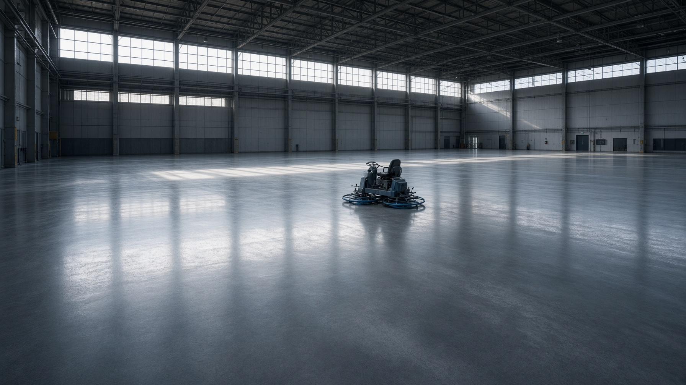

01
Стопинг-полы
Сухая упрочняющая смесь на свежий бетон. Затираем до закрытой поверхности, сдаём без пыли.

ООО «Синие лопасти» · Новосибирск
Закрываем поверхность под синими лопастями и сдаём пол, который держит вилочный поток — без пыли и без «корки через сезон».
Кто мы
Синий цвет лопастей затирочной машины — наш рабочий знак на площадке. Пока пол закрывается, мастер видит свои машины в любом пролёте. Отсюда название.
Не рисуем 3D-презентации вместо сметы. Приезжаем, считаем пирог и уклоны, льём, наносим смесь в окно пластичности, закрываем диском и лопастями, режем швы. Сдаём по нивелиру. Работаем от Новосибирска по Сибири и Уралу.
Работы
Без субподряда на затирку. Стопинг — это окно в несколько часов: либо своя смена, либо риск корки.
Сухая упрочняющая смесь на свежий бетон. Затираем до закрытой поверхности, сдаём без пыли.
Нарезка усадочных швов в срок, нарезка примыканий, герметик под режим склада.
Отслоение, выбоины, разрушенные швы. Локально или картами — без остановки всего цеха.
Когда стопинг не нужен: укрепляем поверхность, убираем цементное молоко, закрываем поры.
Объекты
Технология
Смесь не прощает опоздания. График считаем от окна пластичности, а не от красивой даты в договоре.
01
Считаем основание, нагрузки, уклоны к трапам. Фиксируем допуски по ровности до договора.
02
Плита нужной марки, виброрейка, контроль толщины. Без луж и перепадов на примыканиях.
03
Стопинг уходит в окно пластичности — не раньше и не позже. Расход считаем на м².
04
Сначала диск, затем лопасти. Поверхность закрывается под контролем мастера.
05
Нарезка по карте до появления усадочных трещин. Кромка ровная, шов чистый.
06
Плёнка или уход, нивелир, акт. Входим в гарантию, когда пол набрал прочность.

Лопасти — последний проход. Если смесь легла вовремя, пол закрывается плотным зеркалом.
Смета
Двигайте площадь, выберите смесь — получите вилку. Точную цифру дадим после пирога основания и графика бетона.
Выезд по Сибири и Уралу.
+7 (383) 312-40-10
Пн–Сб 08:00–19:00
Вопросы
На свежий бетон, в окне пластичности: смесь держит след, но ещё не схватилась. Обычно это 3–6 часов после укладки. Если опоздать, слой не втирается и потом отходит коркой.
Кварц — склады, паркинги, ровный вилочный поток. Корунд — производства, где пол трёт абразивом. Металл — удар, разворот тяжёлой техники, зоны погрузки.
В отапливаемом контуре — да. На открытой плите ниже +5 °C стопинг не кладём.
Под складскую технику работаем по СП 29.13330. Допуски прописываем в договоре до заливки.
Не всегда. Стопинг закрывает и упрочняет верх. Пропитка — отдельная задача. Считаем по режиму эксплуатации.
5 лет на отслоение упрочнённого слоя и пыление — при нарезанных швах и согласованном режиме.